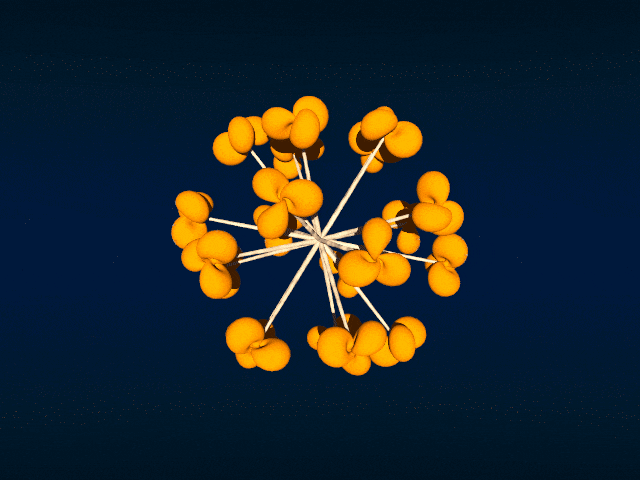
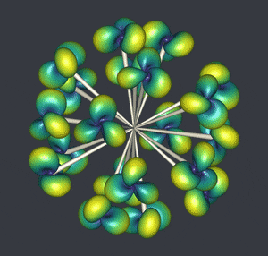

The 'Reorient' transformation
If you follow my youtube channel then you have certainly seen the “ball” of twenty Hopf tori. Sometimes I call it the “Hopf flower”. How is it done?
Well, firstly, I take twenty points on a ball: the twenty vertices of the compound of five tetrahedra. Then, I construct one Hopf torus, and for each of the twenty points I reorient it towards this point and I translate it to this point. This post is about the transformation used to reorient.
POV-Ray

I discovered this transformation in the file transforms.inc of the POV-Ray distribution. You can find it here. Below is the POV-Ray macro which runs the transformation.
#macro Reorient_Trans(Axis1, Axis2)
#local vX1 = vnormalize(Axis1);
#local vX2 = vnormalize(Axis2);
#local Y = vcross(vX1, vX2);
#if(vlength(Y) > 0)
#local vY = vnormalize(Y);
#local vZ1 = vnormalize(vcross(vX1, vY));
#local vZ2 = vnormalize(vcross(vX2, vY));
transform {
matrix < vX1.x, vY.x, vZ1.x,
vX1.y, vY.y, vZ1.y,
vX1.z, vY.z, vZ1.z,
0, 0, 0 >
matrix < vX2.x, vX2.y, vX2.z,
vY.x, vY.y, vY.z,
vZ2.x, vZ2.y, vZ2.z,
0, 0, 0 >
}
#else
#if (vlength(vX1-vX2)=0)
transform {}
#else
#local vZ = VPerp_To_Vector(vX2);
transform { Axis_Rotate_Trans(vZ,180) }
#end
#end
#endAxis1 is the vector to be rotated and Axis2 is the vector to be rotated towards. Usually, Axis1 is the \(x\), \(y\), or \(z\) direction, that depends on the software used.
Haskell

I also did the ball of twenty Hopf tori in Haskell, with the OpenGL library. The full code is available in this Github repository. Below are the relevant parts of the code.
import Data.Foldable (toList)
import Linear
translateAndReorient :: (Real a, Floating a) => V3 a -> V3 a -> [a]
translateAndReorient axis vector =
concatMap toList (toList (mkTransformationMat m vector))
where
vx1 = axis ^/ (norm axis)
vx2 = vector ^/ (norm vector)
y' = cross vx1 vx2
y = y' ^/ norm y'
z1' = cross vx1 y
z1 = z1' ^/ norm z1'
z2' = cross vx2 y
z2 = z2' ^/ norm z2'
m1 = transpose $ V3 vx1 y z1
m2 = V3 vx2 y z2
m = transpose $ m1 !*! m2import Graphics.Rendering.OpenGL.GL
......
tmatrices :: [[GLfloat]]
tmatrices =
map (translateAndReorient (V3 0 0 1)) points
......
forM_ tmatrices $ \tmatrix ->
preservingMatrix $ do
m <- newMatrix RowMajor tmatrix :: IO (GLmatrix GLfloat)
multMatrix m
......R

Of course I also did it in R, with the rgl package. The code is available in this gist, and below are the relevant parts of the code.
Reorient_Trans <- function(Axis1, Axis2){
vX1 <- Axis1 / sqrt(c(crossprod(Axis1)))
vX2 <- Axis2 / sqrt(c(crossprod(Axis2)))
Y <- rgl:::xprod(vX1, vX2)
vY <- Y / sqrt(c(crossprod(Y)))
Z1 <- rgl:::xprod(vX1, vY)
vZ1 <- Z1 / sqrt(c(crossprod(Z1)))
Z2 <- rgl:::xprod(vX2, vY)
vZ2 <- Z2 / sqrt(c(crossprod(Z2)))
M1 <- cbind(vX1, vY, vZ1)
M2 <- rbind(vX2, vY, vZ2)
M <- M1 %*% M2
rbind(cbind(M, c(0, 0, 0)), c(0, 0, 0, 1))
}
library(rgl)
......
for(i in 1:20){
v <- vertices[i,]
M <- Reorient_Trans(c(0, 0, 1), v)
obj <- transform3d(HTmesh, M)
obj <- translate3d(obj, v[1], v[2], v[3])
shade3d(obj, color=colors[i])
shade3d(Cmesh(c(0, 0, 0), 0, v, 0.05, 6, 40, color = "brown"))
}Python

I dit it in Python as well, with the PyVista library. You can find the code in this Github repository.
def Reorient_Trans(Axis1, Axis2):
vX1 = Axis1 #/ must be normalized
vX2 = Axis2 #/ must be normalized
Y = np.cross(vX1, vX2)
vY = Y / np.linalg.norm(Y)
Z1 = np.cross(vX1, vY)
vZ1 = Z1 / np.linalg.norm(Z1)
Z2 = np.cross(vX2, vY)
vZ2 = Z2 / np.linalg.norm(Z2)
M1 = np.transpose(np.array([vX1, vY, vZ1]))
M2 = np.array([vX2, vY, vZ2])
M = np.matmul(M1, M2)
return np.transpose(
np.column_stack(
(np.vstack((M, np.zeros((1,3)))), np.transpose(np.array([0,0,0,1])))
)
)
......
M = Reorient_Trans(np.array([1,0,0]), v)
m = mesh.copy()
m.transform(M)
m.translate((v[0], v[1], v[2]), inplace=True)
......Asymptote

And I did it in Asymptote too. The full code is available in this gist.
// transformation which reorients and translates -----
transform3 transReorient(triple axis, triple vector){
triple vX1 = unit(vector);
triple vX2 = unit(axis);
triple vY = unit(cross(vX1,vX2));
triple vZ1 = unit(cross(vX1,vY));
triple vZ2 = unit(cross(vX2,vY));
real[][] M1 =
{{vX1.x, vX1.y, vX1.z},
{vY.x, vY.y, vY.z},
{vZ1.x, vZ1.y, vZ1.z}};
real[][] M2 =
{{vX2.x, vY.x, vZ2.x},
{vX2.y, vY.y, vZ2.y},
{vX2.z, vY.z, vZ2.z}};
real[][] M = transpose(M2*M1);
transform3 T = copy(identity4);
T[0][0] = M[0][0];
T[1][0] = M[1][0];
T[2][0] = M[2][0];
T[0][1] = M[0][1];
T[1][1] = M[1][1];
T[2][1] = M[2][1];
T[0][2] = M[0][2];
T[1][2] = M[1][2];
T[2][2] = M[2][2];
T[0][3] = vector.x;
T[1][3] = vector.y;
T[2][3] = vector.z;
return T;
}three.js
And finally in JavaScript, with three.js. Go here for the code. And click here to play with it in full screen.
function reorient(axis1, axis2) {
var vX1 = axis1.normalize();
var vX2 = axis2.normalize();
var vY = vX1.clone().cross(vX2).normalize();
var vZ1 = vX1.clone().cross(vY).normalize();
var vZ2 = vX2.clone().cross(vY).normalize();
var M1 = new THREE.Matrix3()
.fromArray([vX1.x, vX1.y, vX1.z, vY.x, vY.y, vY.z, vZ1.x, vZ1.y, vZ1.z]);
var M2 = new THREE.Matrix3()
.fromArray([vX2.x, vY.x, vZ2.x, vX2.y, vY.y, vZ2.y, vX2.z, vY.z, vZ2.z]);
var M = M1.clone().multiply(M2);
var elems = M.elements;
var A = new THREE.Matrix4();
A.set(elems[0], elems[1], elems[2], axis2.x,
elems[3], elems[4], elems[5], axis2.y,
elems[6], elems[7], elems[8], axis2.z,
0, 0, 0, 1);
return A;
}